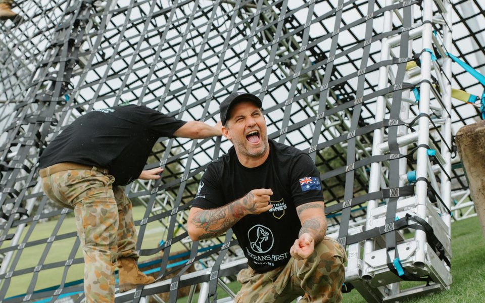
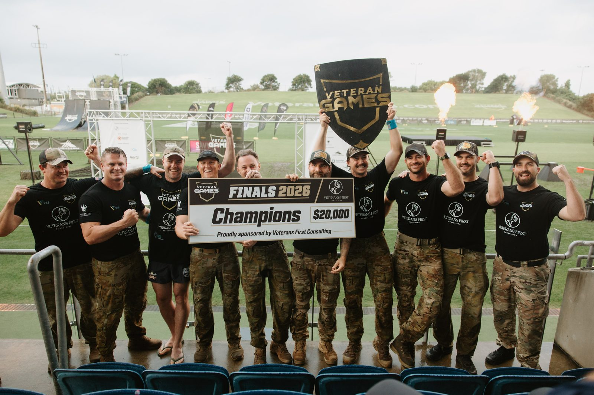
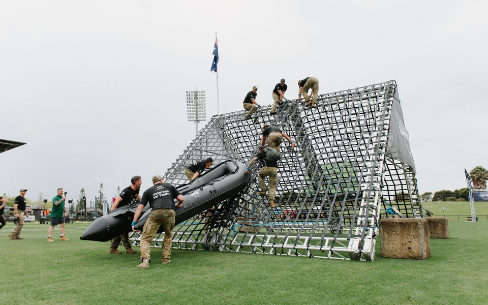
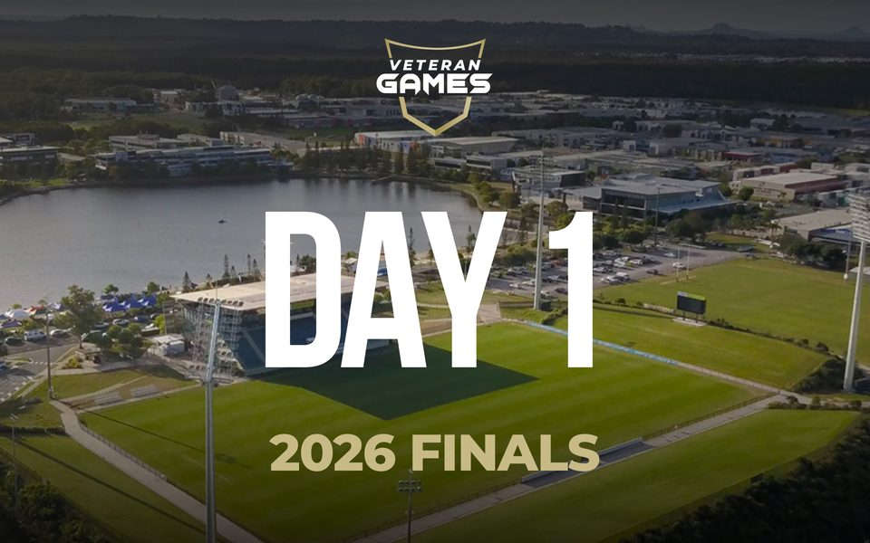
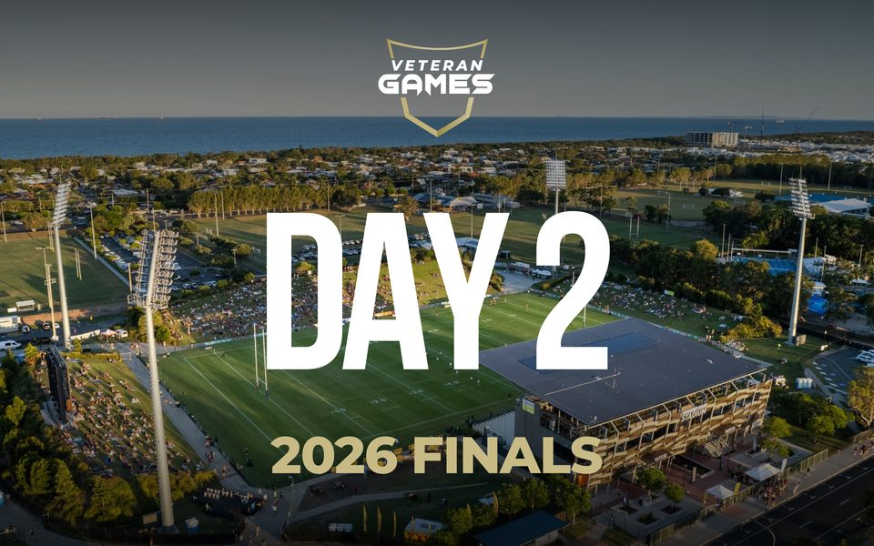
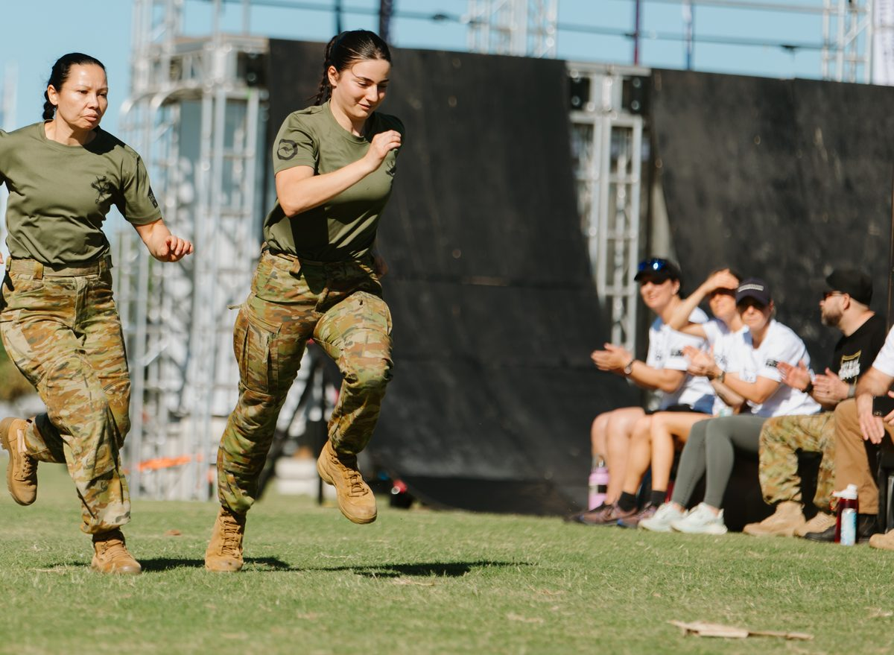

Event Recap
2026 Finals
2026 Finals
Sunshine Coast Stadium
Presented By

The 2026 Veteran Games Finals brought 11 teams together at the Sunshine Coast Stadium for two massive days of competition, teamwork and camaraderie.
Veterans from across Australia were joined by our international competitors from the UK and USA, bringing our community together in front of spectators at the Sunshine Coast Stadium and thousands more watching online.
From the Amphibious Assault at Lake Kawana to the Ninja Wall, Full Mission Profile and the final Tug of War, our competitors were put to the test like never before.
But the Veteran Games has never been about physical performance alone.
Communication. Resilience. Problem-solving. Teamwork.
Every challenge demanded something different, and every team demonstrated what can be achieved when people come together with a shared purpose.
And that's exactly what the Veteran Games is all about.
We were incredibly honoured to receive this special message from Her Excellency the Honourable Sam Mostyn AC, Governor-General of the Commonwealth of Australia, to officially open the 2026 Veteran Games Finals.
Our sincere thanks to Her Excellency for taking the time to share this message, and for her support of our Veterans and everyone involved in the Veteran Games.
Congratulations to Veterans For Youth, crowned 2026 Veteran Games Champions after two days in the Veteran Games Arena.
An outstanding achievement for our champions and every team who gave it their all.

How the leaderboard finished after two days of competition.
Missed a moment, or want to relive it? The highlights and both days of the live stream are up in full on YouTube.




The full Finals gallery is on its way. You'll be able to filter by event or find your team to see every photo.
"Every challenge demanded something different, and every team demonstrated what can be achieved when people come together with a shared purpose."
A sincere thank you to our presenting sponsor, Veterans First Consulting, our Gold Sponsor, the Northern Territory Government, our Series Sponsors High Sierra, Medi Skills Institute, Ringers Western and POA, our Community Sponsors VPA Australia and Tactical Physio, and our partners Hertz and Inside Out Active Recovery, along with our vendors, our amazing volunteers, supporters and everyone who came down to Sunshine Coast Stadium or tuned in from home. To every competitor who stepped onto the field, thank you.
2027 is yet to be announced, and we're planning to celebrate and commemorate our 5th year in a big way. Register your interest to compete as an individual or with your team, join the Finals Vendor Village as a Veteran brand, business or group, come on board as a sponsor, or volunteer.
